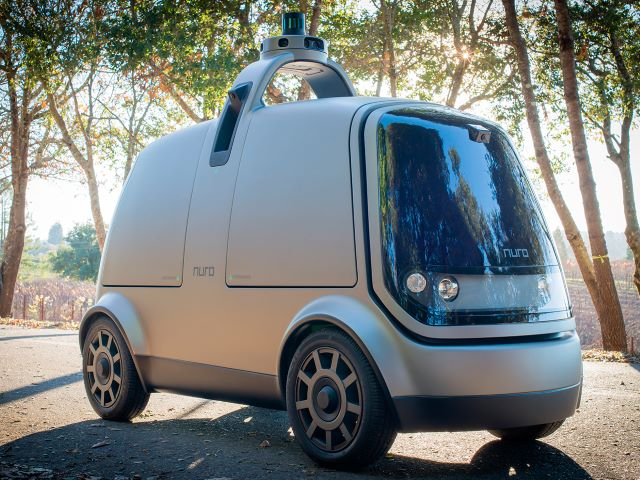
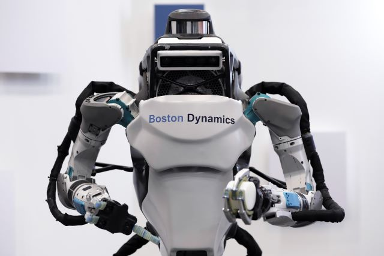
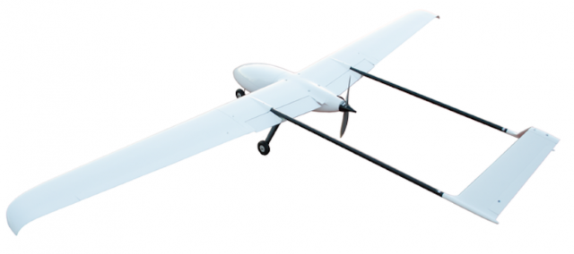

Современные роботы проникли в очень многие сферы человеческой жизни. Их многообразие потрясает: здесь и просто детские игрушки, и целые автоматизированные заводы, хирургические комплексы, искусственные домашние питомцы, военные и гражданские беспилотные аппараты. Их постоянной разработкой и совершенствованием занимается множество организаций в мире.
- Nuro 
Nuro разрабатывают технологии, которые помогают людям более эффективно использовать наши ресурсы, время и внимание. Флагманский продукт компании - это линейка полностью автономных дорожных транспортных средств, предназначенных для быстрой, безопасной и доступной перевозки грузов, позволяющим выполнять различные поручения, начиная от получения продуктов из химчистки и заканчивая доставкой продуктов.
- Boston Dynamics
Boston Dynamics производит множество различных роботов, которые обладают ловкостью, как у людей, так и у животных. Например: Атлас, «динамичный гуманоид», который использует навыки равновесия и всего тела для достижения мобильных манипуляций двумя руками.
Applied Aeronautics 
Applied Aeronautics производит беспилотные летательные аппараты (БПЛА). Его основной продукт, электрический самолет Albatross, используется в различных секторах, от сельского хозяйства и исследований до управления операциями в случае стихийных бедствий и защиты.
И ещё многие другие. Про них вы можете узнать на этом сайте: https://builtin.com/robotics/robotics-companies-roundup. А также посмотреть видео c достижениями Boston Dynamics на их оффициальном youtube канале: https://www.youtube.com/user/BostonDynamics.
Специальность «Мехатроника и робототехника» и ей подобные присутствуют во многих технических университетах мира. Специалисты с таким образованием весьма востребованы на рынке труда, ведь автоматизация проникает все глубже во многие сферы человеческой деятельности.